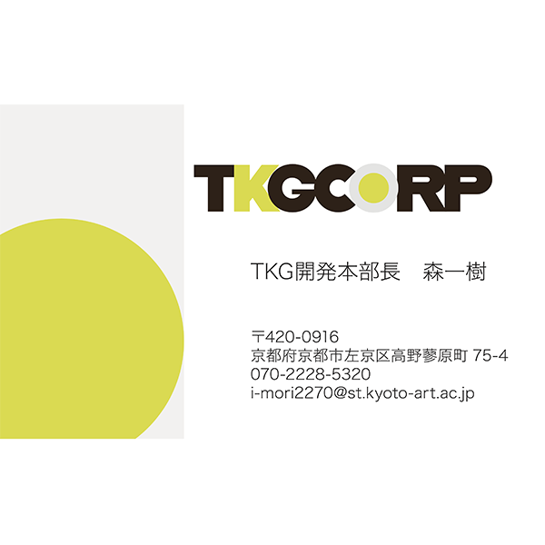
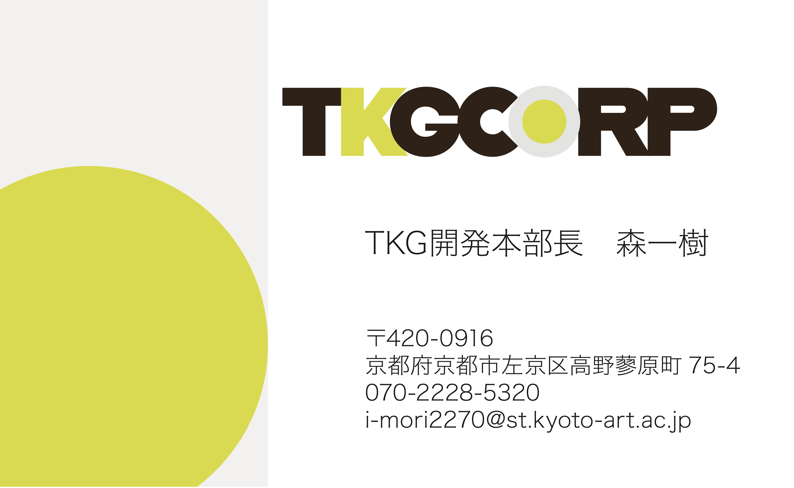
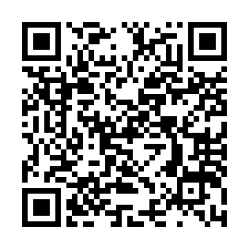
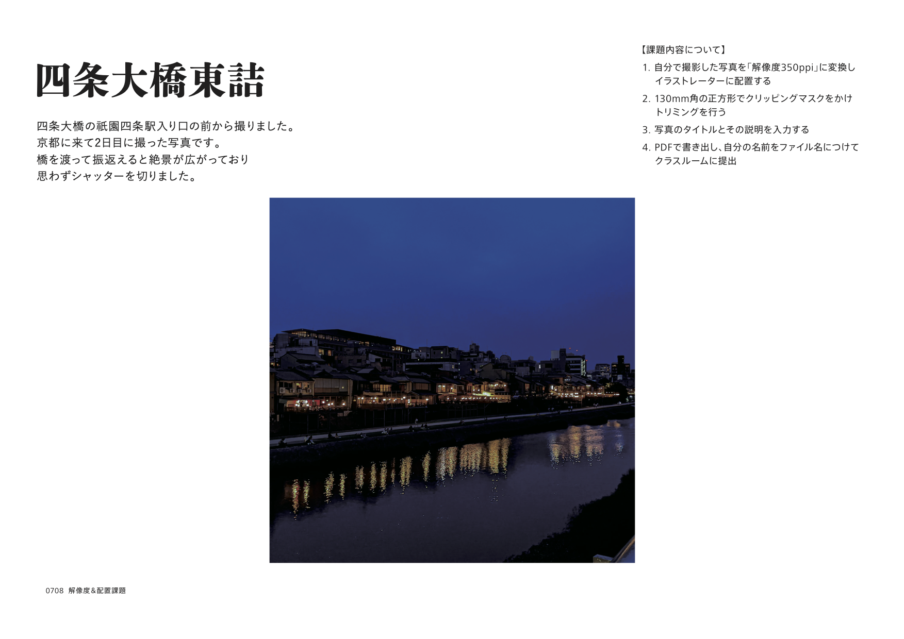

メディアリテラシー学習進歩

履修科目
後期
- ソフトウェアネットワーク演習Ⅱ
- クロステックデザイン演習Ⅲ
学習進歩
【イラストレーターを使った名刺制作】

制作時はまだ今以上にIllustratorに慣れていませんでした。
なかなか思い通りのデザインにできず、想像と異なるデザインになっていしまいました。
Illustratorは本気でやらなくてはと思っています。
特に、ペンツールは思うがままに操れるように訓練したいです。
また、トリムマークの付け方などに気をつけて行きたいです。
【インタビュー：インターネットによって変容した生活様式】

改めてインターネット社会にがもたらした変革というものを感じました。
インターネットが普及していなかった時代を知る父にインタビューすることで
インターネットの現状や今後の可能性が少し、見えた気がします。
僕はインタビュー結果から広告費の変化をとりあげました。
テレビからインターネットにメディアが変化し情報の形や質、量がさらに変化すると思います。
スタートアップ概論などの授業と合わせて考えていきたいです。
【インタビュー：インターネットによって変容した生活様式】

今後ポートフォリオなどを製作する上でも、
解像度の問題は常について来ると思います。
いつでも適切に変更できるように常識として身につけます。
また、画像の編集を総合的に身につけることで
ポートフォリオ意外にも、ポスターや冊子、写真などを
綺麗に制作できると思います。
Lightroomと合わせて学びたいです
【調査 ウィズコロナ・アフターコロナの新しい生活】
対面での授業で新鮮な気持ちの中で授業を行ったことを覚えています。
僕たちのチームではオンラインでの友好関係の構築をテーマに考えました。
なかなか解決案がでず、とても難しいテーマでした
チームで制作した動画をそれぞれ分割しYoutubeに投稿しました。
スライドがなかなか完成せず深夜までミーティングを行い、完成することができました。